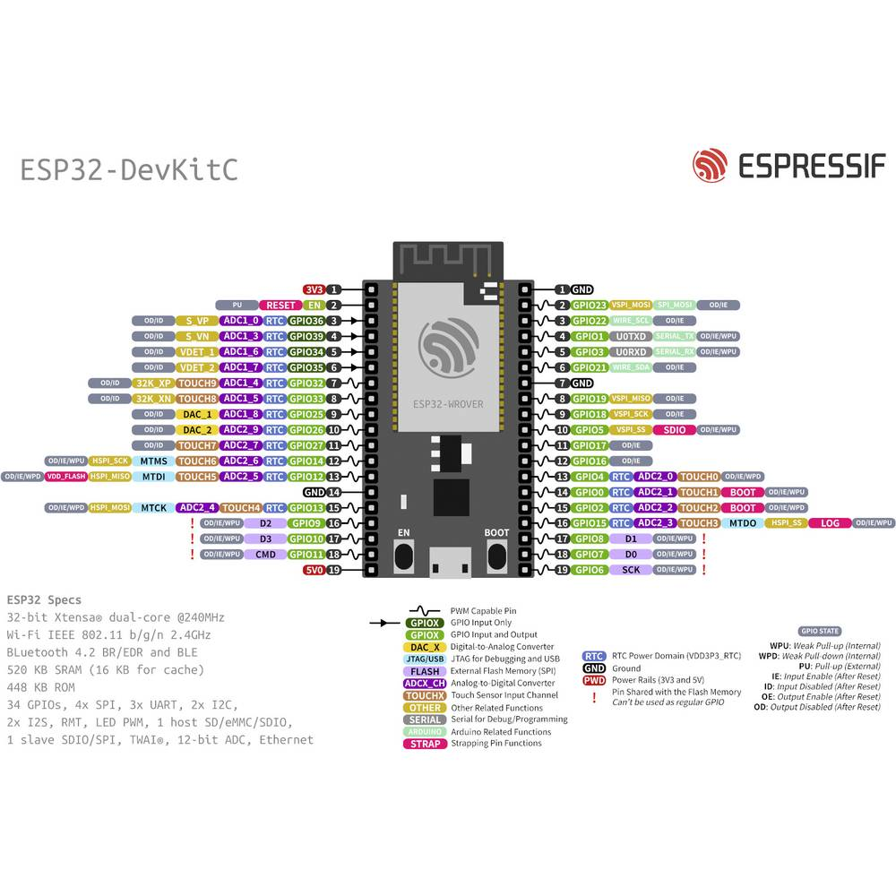
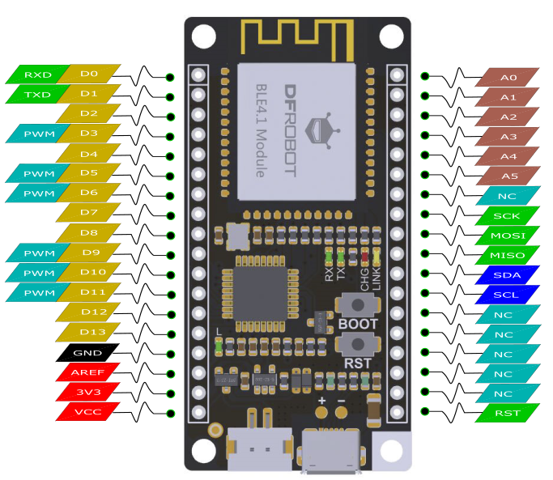
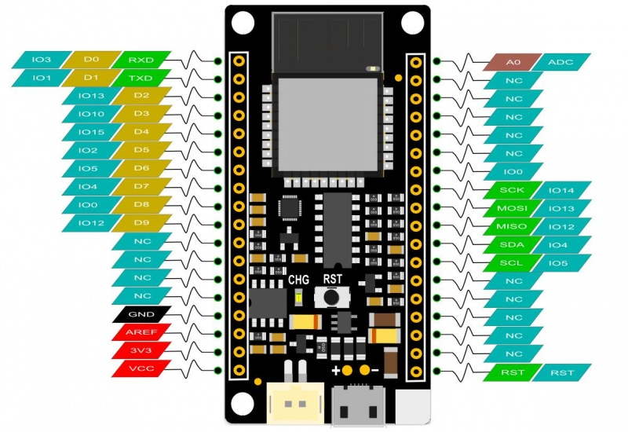

Carte ESP32 ou ESP8266
Carte ESP32
Dans le logiciel, Arduino IDE, le Menu : File puis Preferences -> Additional boards manager URLs:
Ajouter cette URL : https://espressif.github.io/arduino-esp32/package_esp32_index.json
Dans le Board Manager, Installer : "esp32 by Espressif Systems"
Carte Espressif ESP32-WROOM-32E


Carte DFRobot FireBeetle ESP32-WROOM-32


Carte ESP8266
Dans le logiciel, Arduino IDE, le Menu : File puis Preferences -> Additional boards manager URLs:
Ajouter cette URL : http://arduino.esp8266.com/stable/package_esp8266com_index.json
Dans le Board Manager, Installer : "esp8266 by ESP8266 Community"
Carte DFRobot FireBeetle ESP8266

